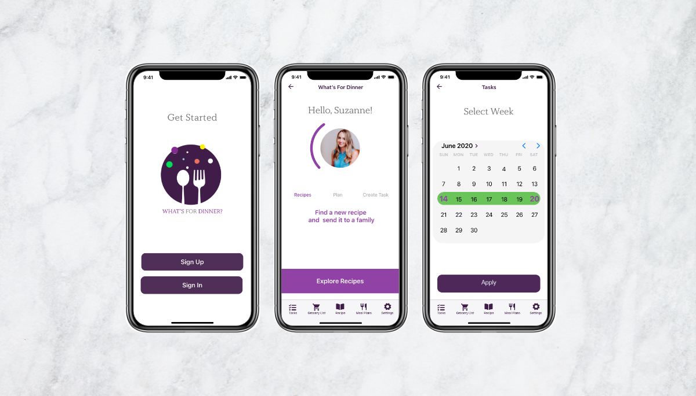
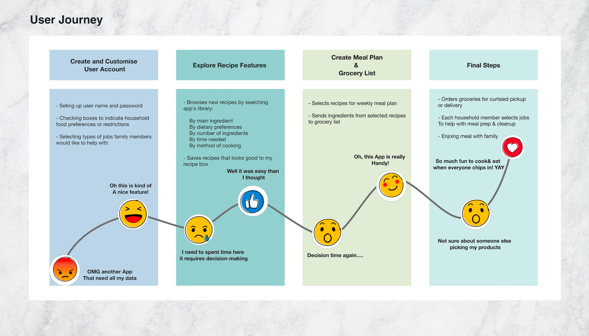
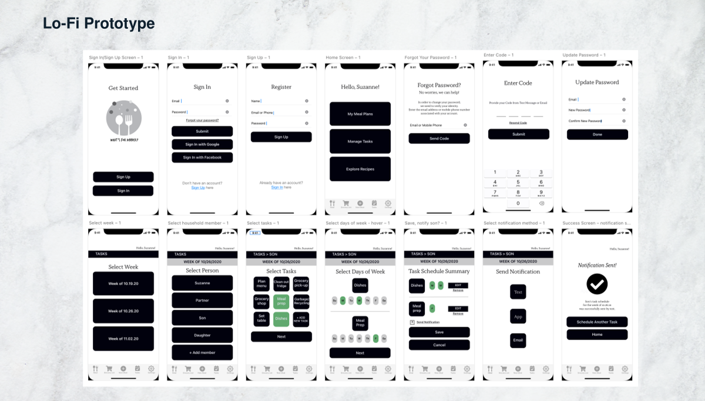

Problem: In a busy household, meal planning and execution are a lot of work, and too often seem to fall primarily on one person. As of yet, there isn’t a web-based meal planning platform that allows members of the same household to identify the tasks involved in meal planning, let alone to select which household member will take responsibility for each task.
Solution: A mobile app for households to make meal planning easier and to enable all household members to share in the process.
Tools: Miro | Figma | Adobe Illustrator | Adobe Photoshop | Adobe XD | Microsoft Excel | Google Workspace
My Responsibilities: User Research Plan, Problem Statement, User Statement, Value Proposition Statement, Competitor Analysis, Flow Chart Lo-Fi - Hi-Fi prototyping and Testing
Timeline: 3 weeks - group project